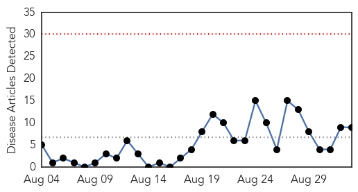
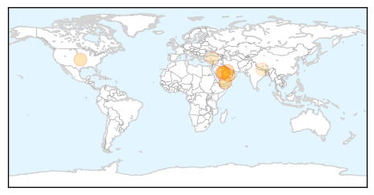

30 Day Trends
Web: 0 alerts, 0 warnings
Twitter: 15 alerts, 3 warnings
Top Articles:
- 0.999
- Riyadh MERS outbreak shows no signs of slowing
- 0.993
- More MERS deaths underscores vaccine urgency
- 0.993
- Update on latest MERS situation in Jordan
- 0.990
- Eastern Province goes all-out against MERS
- 0.923
- Health Minister meets Hajj medical committee
- 0.827
- PEDv Containment Efforts Make Progress
- 0.635
- Statement - Population movement is a challenge for refugees and migrants as well as for the receiving population
- 0.513
- Saudi- Riyadh schools a no entry zone for corona
- 0.512
- South-East Asia ministers to set health priorities
Top Tweets:
- 0.712
- AFD Blog `Saudi MERS Cluster Grows By 7 Cases' MERS-CoV http://t.co/h4rgYHgsR6
- 0.684
- AFD Blog `@WHO MERS Update – Saudi Arabia Sept 2nd' MERS-CoV http://t.co/Ho1Vn9u0aD
- 0.583
- AFD Blog ` Korea Announces Major Changes In Wake Of MERS Outbreak' MERS-CoV http://t.co/9vF22jA89f
Web/News Articles
Tweets

Article Locations
Article Confidences